Spline Interpolation#
Overview#
Splines are real functions that are continuously defined while being parameterized by discrete data. They provide a principled bridge between discrete samples and a continuous representation, which makes a number of operations possible (or at least much safer) than in a purely discrete setting:
Differentiation: true gradients instead of finite differences, useful for edge detection, variational methods, and differential models.
Arbitrary geometric transformations: evaluation at any real-valued coordinate, not only at sample locations.
Resizing and other scale changes: downsampling with reduced aliasing thanks to a continuous-domain model.
There are many brands of splines. In the graphics world, one often relies on splines to represent curves, for instance with nonuniform rational B-splines. This library is not meant to be used for such applications; instead, it is well-suited to the handling of data defined on a uniform Cartesian grid and offers successful tradeoffs between quality of representation and computational efficiency [1], [2], [3], [4], [5], [6].
Pros
Bridge between the discrete world and the continuous world.
Tunable trade-off between speed and quality.
Efficient continuously defined representation of uniform data in multiple dimensions.
Cons
The spline may overshoot/undershoot the data samples.
Along a path, the spline may not be monotonous in regions where the data samples are.
The spline is nonlocal, by which we mean that the update of just one data sample requires the update of the whole spline.
Splines#
B-Splines#
A one-dimensional polynomial B-spline is a member of a family of real functions \(\beta^{n}:{\mathbb{R}}\rightarrow{\mathbb{R}}, x\mapsto\beta^{n}(x)\) that are characterized by their degree \(n\in{\mathbb{N}}\) (e.g., linear, cubic). There, the degree \(n\) is a superscript—as opposed to a power. Several equivalent explicit formulations of \(\beta^{n}\) exist. One convenient closed-form expression, valid for \(n \in {\mathbb{N}}_{>0}\), is
where \((t)_{+} = \max(t, 0)\) denotes the positive part of \(t\) and \(x\in{\mathbb{R}}\) is the argument of the B-spline.
Here is the plot of a cubic B-spline.
{kind=link}
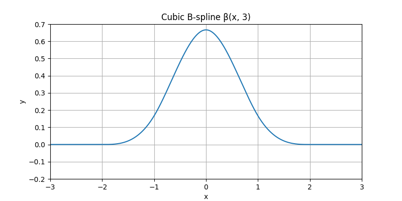
Now, let us shift this B-spline horizontally by one third.
{kind=link}
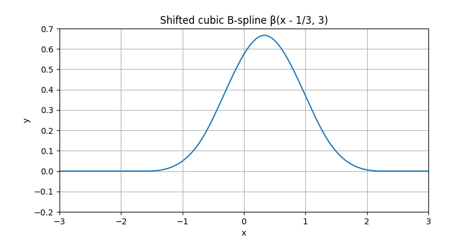
Moreover, let us shrink it by 60%.
{kind=link}
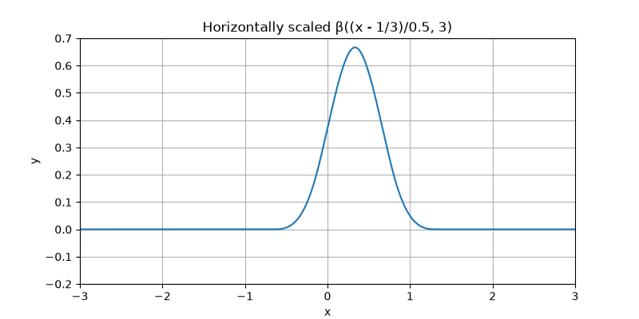
Finally, let us multiply it by one fourth. This multiplicative step is called a weighting of the B-spline.
{kind=link}
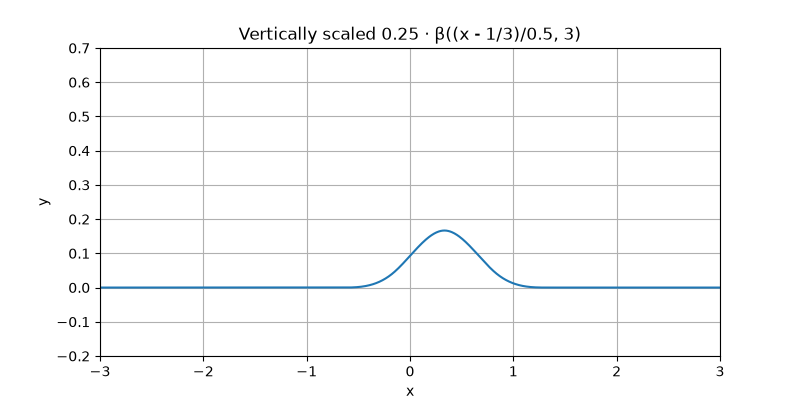
Likewise, we could play with any other combination of (shift, shrink, weight) to obtain a zoo of other functions, including some with negative weight. In the present case, all of them would be said to be cubic B-splines, up to their individual (shift, shrink, weight). Here are some.
{kind=link}
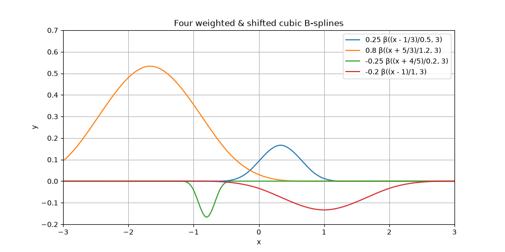
B-splines have many relevant properties. Among them, the (technical) fact that they have an optimal order of approximation explains why these functions are so good at representing discrete data. In nearly every case of relevance, their most important (practical) property is that their support is finite.
Spline Definition#
Now, we are going to do something bold. Let us sum together the functions of the previous figure.
{kind=link}
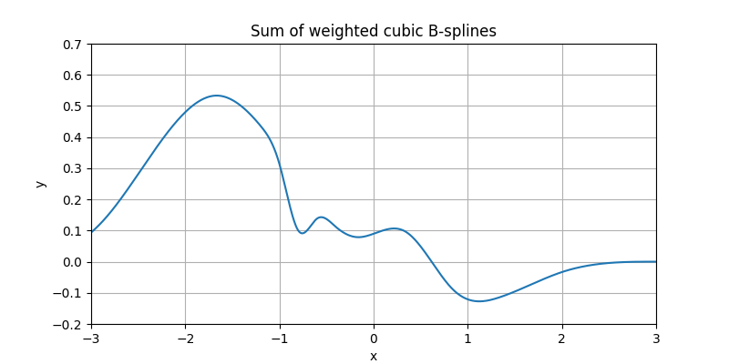
We were able to create some combined function that seems to be kind of arbitrary. This combined function somehow retains the characteristics of B-splines, but it is no more a B-spline (the letter B stands for Basis); instead it is called a spline (without the B).
In one dimension, and for a fixed spline degree \(n\), such a spline can be written as
where \(\beta^{n}\) is the degree-\(n\) B-spline and \(c[k]\) is an arbitrary sequence of real coefficients. Different choices of \(c[k]\) produce different spline functions, all built from the same shifted B-spline basis.
Interpolation#
Introduction#
We are going to use splines to interpolate data, which is an operation whose purpose is to build a continuously defined function out of arbitrary discrete samples, in such a way that the samples of the built function are identical to the provided ones. To make our life simple, from now on we are going to consider only integer-valued shifts (the spline is then said to be a regular spline). Also, we are not going to either shrink or expand B-splines anymore, nor are we ever going to consider splines made of a mix of degrees. Yet, we want to maintain our free choice of the weights of the B-splines; this will give us sufficient freedom to build splines that can be shaped any way we want.
Here is some uniform spline (thick curve), along with its additive constituents (arbitrarily weighted and integer-shifted B-splines of same degree, thin curves).
{kind=link}
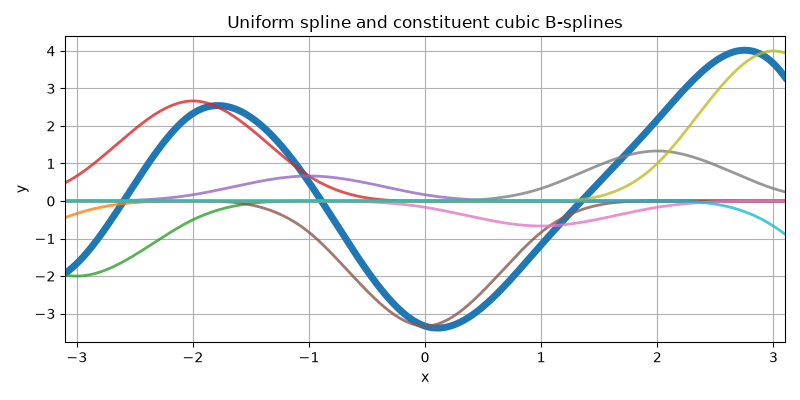
We now mark with dots the samples at the integers of this particular spline.
{kind=link}
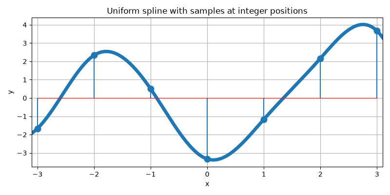
These samples make for a discrete list of values (i.e., the data samples). Since we want to interpolate these data, a natural question that arises is as follows: is there a way to reverse the process and to first impose a list of arbitrary sample values, then only to determine which B-spline weights are appropriate to build the uniform spline that happens to go through these samples? Here is the succession of operations we have in mind.
{kind=link}
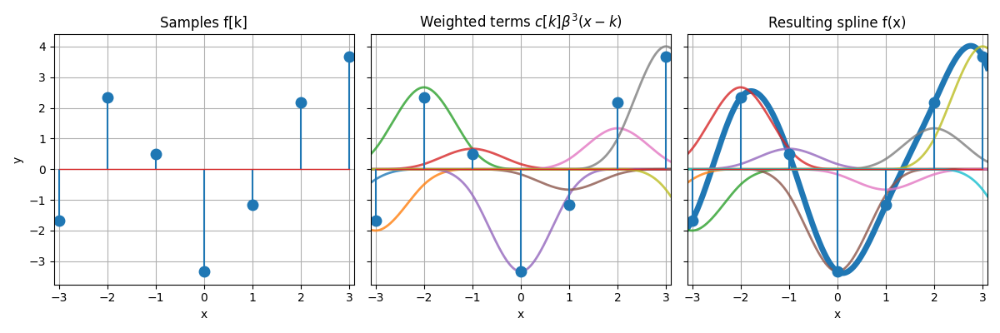
The answer is yes, we can go from discrete samples to continuously defined curve, but one needs to do it right. For instance, the weighting process is not trivial; the center panel of the figure above illustrates the fact that the value of a weight is usually not equal to the value of a sample—for a clear case, do inspect abscissa at 2.
1D Interpolation Example#
The example Interpolate 1D Samples illustrates how a 1D sequence of samples \(f[k]\) is interpolated by a cubic B-spline, and how this spline can be written as a sum of shifted and weighted basis functions.
Given a discrete sequence \(\{f[k]\}\) of samples, we seek a continuously defined spline \(f(x)\) of the form
such that the interpolation condition
is satisfied for all integer \(k\). The key point is that the spline coefficients \(c[k]\) are generally not equal to the samples \(f[k]\). Instead, they are obtained from \(\{f[k]\}\) by a digital prefiltering step, implemented as a recursive IIR filter. This prefilter enforces the interpolation constraints while preserving the smoothness and locality properties of the cubic B-spline basis.
Below we reproduce three of the figures from that example.
The first figure shows the discrete samples \(f[k]\) alone:
{kind=link}
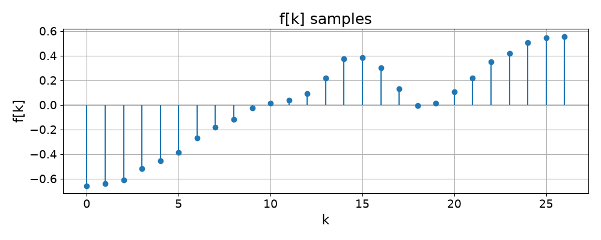
The second figure displays the shifted cubic B-splines \(\beta^{3}(x-k)\) weighted by the corresponding coefficients \(c[k]\). Each thin curve is one term \(c[k]\beta^{3}(x-k)\) in the spline expansion:

The third figure shows the resulting interpolating spline \(f(x)\) (smooth curve) overlaid with the original samples \(f[k]\) (stems). One can see that the spline passes exactly through all sample points, while providing a smooth, continuously defined representation in between:
{kind=link}
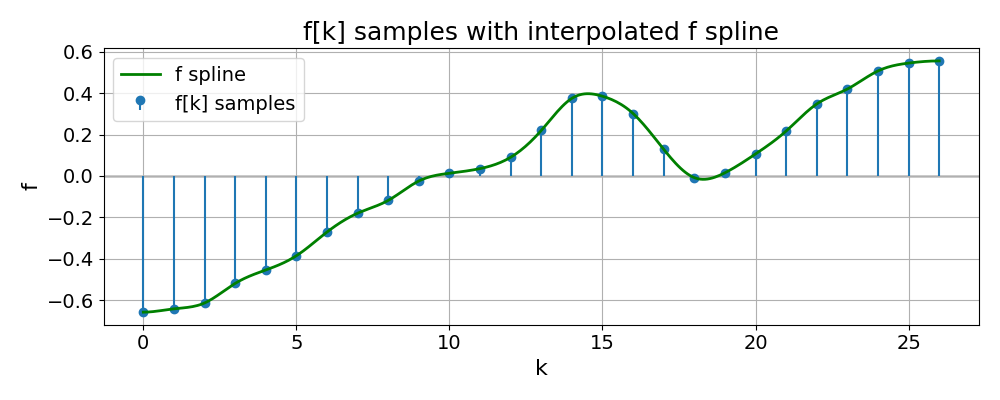
In Multiple Dimensions#
In multiple dimensions, a regular spline generalizes naturally to a tensor product of one-dimensional B-splines. For a fixed spline degree \(n\), we consider a \(d\)-dimensional real function
where \(\mathbf{x}\) is the function argument in \(d\) dimensions and \(c[\mathbf{k}]\) is an infinite list of real coefficients with indices in \(d\) dimensions too. These coefficients are tuned in such a way that
where the function \(f\) is the spline and where the list \(s\) contains the samples that we want to interpolate, as provided over a finite set \(\Omega\subset{\mathbb{N}}^{d}\) of indices. Since this set is finite in practice while the coefficients \(c[\mathbf{k}]\) must be defined for infinitely many indices, one has to invent values for those coefficients that are far away from \(\Omega\). Arbitrary recipes are followed to that effect. For instance, the boundary “modes” used in this library (mirror, periodic, zero-padding, etc.) are different ways of controlling how the spline behaves outside the sampled domain.
TensorSpline and Resize APIs#
The mathematical model above is implemented in SplineOps by two complementary
modules: spline interpolation (using TensorSpline) and
resize (using resize() and resize_degrees()).
They share the same spline formulation but target slightly different use cases.
Comparison#
Feature |
||
|---|---|---|
Purpose |
Generic spline interpolant: evaluate \(f(\mathbf{x})\) at arbitrary coordinates. |
High-level N-D resizing on uniform grids (images, volumes, time series). |
Grid / coordinates |
Arbitrary coordinate arrays (not necessarily uniform). |
Uniform grids only; you specify zoom factors or output size. |
Bases / degrees |
Many bases (B-splines 0–9, OMOMS, Keys, …), any supported degree of the chosen basis. |
Degrees 0–3 via presets ( |
Boundary handling |
Modes per axis ( |
Currently uses mirror-like handling, tailored for resizing. |
Implementation / performance |
Pure Python (with optional CuPy for GPU); very flexible but slower. |
C++ backend when available, with Python fallback; much faster and more memory-friendly. |
Typical use |
Custom interpolation at arbitrary points, nonuniform sampling, algorithm prototyping. |
Production resizing, antialiasing downsampling, and large N-D data processing. |
Equivalence for Standard Interpolation#
In the special case of a uniform grid, B-spline degrees 0–3 and mirror
boundaries, standard interpolation via TensorSpline matches the
corresponding resize() presets exactly:
|
Equivalent |
|---|---|
|
|
|
|
|
|
|
|
In other words, for these settings:
the spline model is the same,
the interpolation values agree up to numerical precision,
but
resize()is usually much faster thanks to its C++ core and optimized memory access patterns.
Usage#
Using TensorSpline directly:
import numpy as np
from splineops.spline_interpolation.tensor_spline import TensorSpline
# 2-D data on a uniform grid
data = np.random.randn(64, 64).astype(np.float32)
x = np.linspace(0, data.shape[0] - 1, data.shape[0], dtype=data.dtype)
y = np.linspace(0, data.shape[1] - 1, data.shape[1], dtype=data.dtype)
coords = (x, y)
ts = TensorSpline(
data=data,
coordinates=coords,
bases="bspline3", # cubic spline
modes="mirror", # boundary handling
)
# Evaluate on a finer grid (e.g. 2× upsample)
x_fine = np.linspace(0, data.shape[0] - 1, 2 * data.shape[0], dtype=data.dtype)
y_fine = np.linspace(0, data.shape[1] - 1, 2 * data.shape[1], dtype=data.dtype)
data_upsampled = ts(coordinates=(x_fine, y_fine))
Using resize() for the same operation:
import numpy as np
from splineops.resize import resize
data = np.random.randn(64, 64).astype(np.float32)
# 2× zoom along both axes with cubic interpolation
zoom_factors = (2.0, 2.0)
data_upsampled = resize(
data,
zoom_factors=zoom_factors,
method="cubic", # matches bspline3 + mirror in the TensorSpline call
)